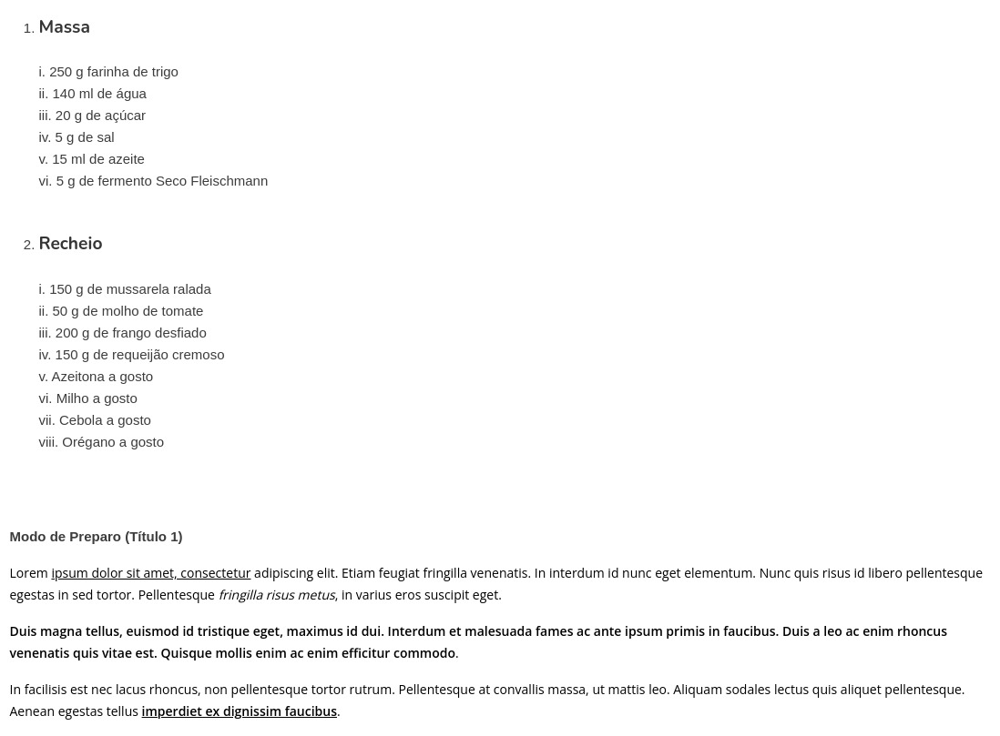

Neste desafio, o objetivo será montar uma lista de itens para fazer uma receita. No final precisamos ter uma lista com os ingredientes e embaixo a forma de como fazer, que deve ser um texto corrido.
O resultado final deve ser conforme a imagem abaixo:
Passe o molho de tomate sob a massa pré-assada, espalhe a s>mussarelai>, o frango, o milho, a azeitona, o requeijão cremoso e a cebola e leve no forno preaquecido a 200° C por aproximadamente 8 minutos ou até que a borda da pizza esteja dourado.
Passe o molho de tomate sob a massa pré-assada, espalhe a mussarela ralada, o frango, o milho, a azeitona, o requeijão cremoso e a cebola e leve no forno preaquecido a 200° C por aproximadamente 8 minutos ou até que a borda da pizza esteja dourado.
Passe o molho de tomate sob a massa pré-assada, espalhe a mussarela ralada, o frango, o milho, a azeitona, o requeijão cremoso e a cebola e leve no forno preaquecido a 200° C por aproximadamente 8 minutos ou até que a borda da pizza esteja dourado.